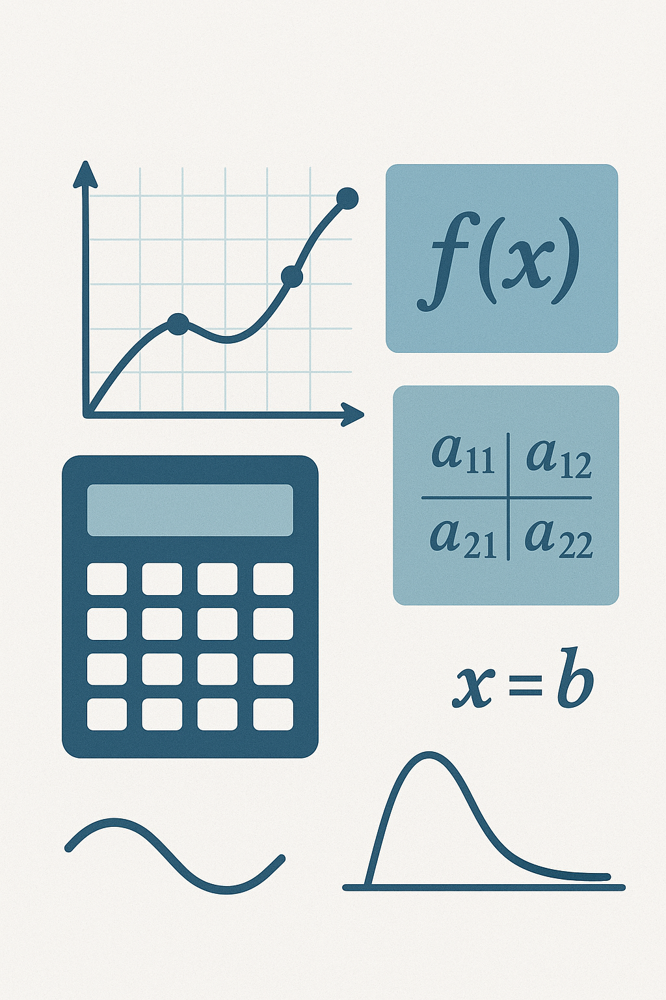

Bienvenido
Explora los fundamentos y aplicaciones de los métodos numéricos en esta plataforma educativa interactiva.
🌐 ¿Qué encontrarás aquí?
Nuestra plataforma ofrece teoría clara, para estudiantes de ingeniería civil y carreras afines. Podrás aprender los métodos numéricos.